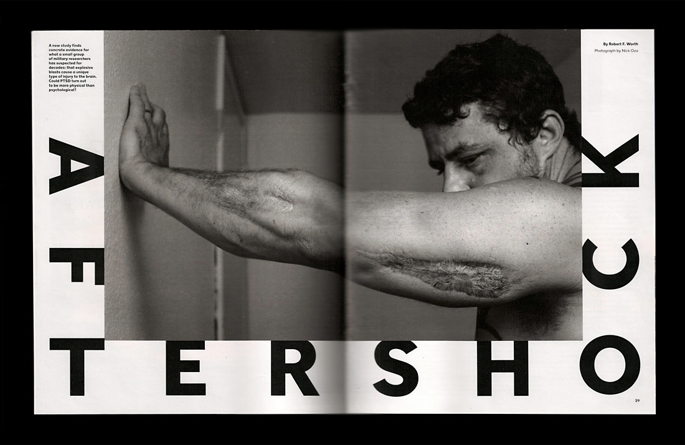
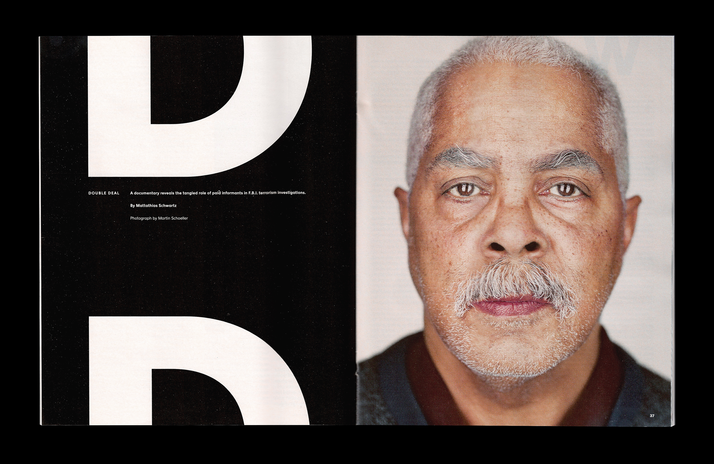
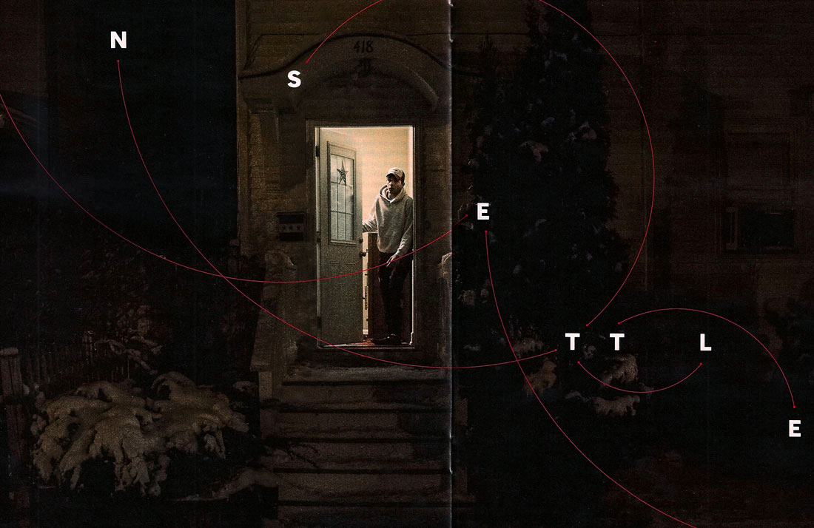
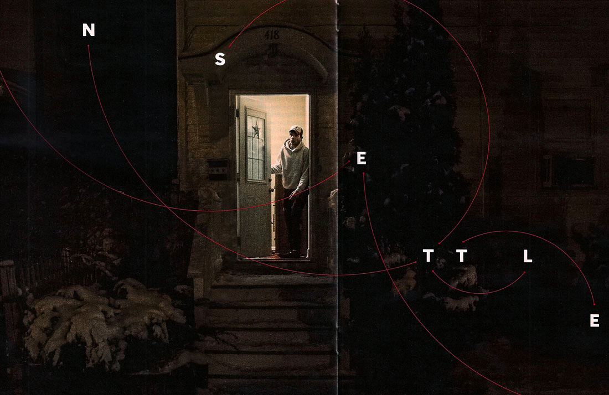

About an island disappearing due to rising water levels:

About the physical effects of tramatic brain injuries: 
About the International Criminal Court:

About a methane leak in California:


About a documentary film that follows an F.B.I. informant:


About Chris Jackson, radical editor:

About the crash of Amtrak 188 in Philadelphia (a rock thrown at the windshield was an important factor):


About an immigrant family scattered across the globe, trying to reunite in the States:
 

About secular bloggers attacked with machetes by Islamic extremists:


About Justin Trudeau, Canada's newly elected prime minister: